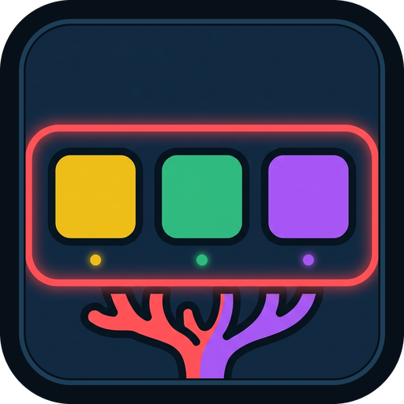

reef@ubermetroid.github.io · Wayland-First · Zero SubprocessesIntelligent Screen-Edge Dock Built to Pair with Kelp
Reef turns GNOME Shell's Overview Dash into a fast screen-edge dock with Wayland pressure barriers,
Kelp-friendly window-dodge intellihide (ALL_WINDOWS), scroll-wheel window cycling, and a 4-tab Libadwaita Settings & About dialog.
Engineered for Kelp & Modern GNOME
Derived from Dash to Dock and stripped of ~85% of legacy GNOME 3 / Unity bloat.
Kelp-Friendly Intellihide
Defaults to ALL_WINDOWS dodge mode so the dock stays visible on an empty desktop and slides away whenever any tiled or floating window overlaps—never covering unfocused Seahorse or Octopus columns.
Wayland Edge Pressure
Push the pointer against the screen edge to reveal the hidden dock smoothly via native Meta.Barrier pressure detection.
Unified Kelp Styling
Matches Kelp out of the box with a 2px Coral Red border (rgb(255,0,0)), 6px floating margin, 16px corner radius, and 1-click presets (Gruvbox Amber, Kelp Emerald, Ocean Cyan, Coral Red).
Quick Install
Install from the latest GitHub Release bundle across Fedora, Debian, Ubuntu, Arch, openSUSE, and NixOS:
gnome-extensions install --force reef@ubermetroid.github.io.shell-extension.zip gnome-extensions enable reef@ubermetroid.github.io